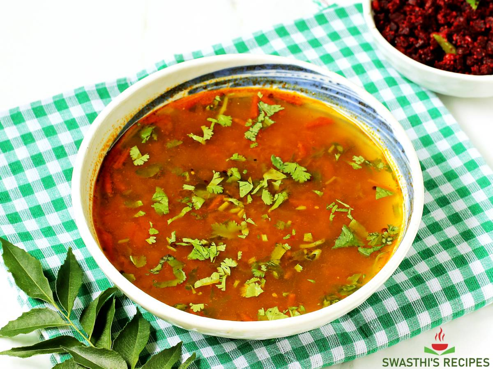
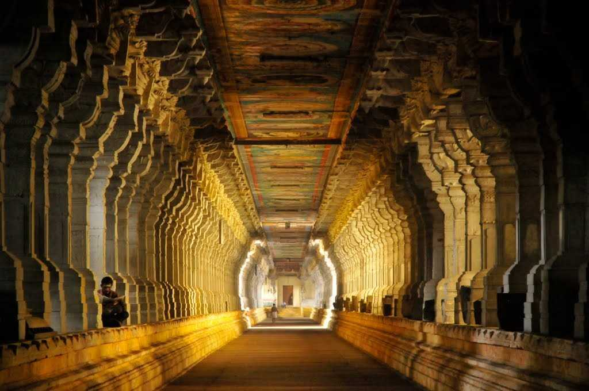

Tamil Nadu is a state in Southern India known for its temples and architecture, food, movies and classical Indian dance and Carnatic music. The languages spoken here are predominantly Tamil (also written as Thamizh) and English
Folk Dance
Tamil Nadu has a dozen of folk dances and the most popular among them are Maytil Attam, Kai Silambu Attam, Bharatnatyam and Kummi.
Maytil Attam
Women dancers adorned with peacock feathers, glittering headdress, and a beak perform this dance to the tune of folk music. They pay homage to Lord Muruga by dressing as peacocks.
Kai Silambu Attam
Performed in temples during Navratri or Amman festivals, the dancers hold anklets or silambu to give music, and dance to please the female deities, especially goddess Kali through their dance.
Bharatnatyam
A dance performed only by women, Bharatnatyam depicts religious themes and spiritual ideas of South India. Among the oldest dance forms of India, it includes dance as well as drama.
Kummi
This classical dance form has women standing in a circle, clapping their hands to add beats. It is performed at all religious ceremonies, family functions, and harvest festivals like Pongal.
Dress
Traditional Dresses for Women
Sari finds immense significance in the traditional clothing for women in Tamil Nadu.Kancheepuram sari is especially well known for its exquisite style.
Pavada is the dress adorned by Brahmin girls before getting married. This half sari dress is the combination of a full-length skirt with a short blouse and a shawl known as Davani. It is the symbol of young age and beauty of the Tamil girls.
These days, Salwar Kameez has also become popular among women of Tamil Nadu.
Traditional Dresses for Men
The traditional dress of Tamil men is as elegant as the dress of women. Lungi is the most common bottom-wear for men in Tamil Nadu. It is wrapped around the waist and thighs. Lungi comes in different colours. It is the traditional dress worn by men in marriages too. This rectangular shape cloth is generally made with cotton. It is mostly worn with a shirt or Angavastra.

Cuisine
Sambar
It is a lentil-based stew which has been prepared with tomatoes and/or tamarind as its base for building flavours. Whether it is for breakfast or a lavish traditional Tamilian lunch spread, Sambar is a significant part of almost every meal in Tamil Nadu and in Tamilian homes everywhere.
Puliyodarai
Tamarind, coconut and rice are very common ingredients used in Tamil Brahmin food. One such dish that comes from combining tamarind and rice is Puliyodarai. It is a special dish and is generally made during festivals and special occasions. First, it is offered to God as prasadam while praying in the temple and then enjoyed by people.
Paruppu Payasam
This traditional sweet dish is made with moong dal, jaggery, coconut milk, ghee and nuts - that’s it! During summer, Paruppu Payasam is commonly prepared since moong dal is cooling for the body. It’s not overly sweet and is made using jaggery.
Rasam
Rasam is a tangy, peppery broth that has been tempered with typical spices like curry leaves and mustard seeds. These are used frequently in Tamil cooking and the rest of South India. It is very different from Sambar and can be enjoyed with rice or just on its own.
Tourism
Rameshwaram
Rameshwaram is located on a beautiful island in the South Indian state of Tamil Nadu. It is separated by a small Pamban channel from Sri Lanka. According to Hindu mythology, this is the place where Lord Rama created a bridge across the sea to Sri Lanka.

Yercaud
Nestled in the Shivaroy Hills of Tamil Nadu, Yercaud is a hill station in the Eastern Ghats steeped in abundant greenery. Commonly called ‘Ooty of the Poor’, this region has a history dating back to the time of the British. Located at an altitude of 4970 feet, Yercaud is known for its vast expanses of coffee plantations and great weather.
Kodaikanal
Kodaikanal is one of the most famous honeymoon destinations in India. A Lakeside resort town of Tamil Nadu, Kodaikanal has a beautiful climate, mist-covered manicured cliffs and waterfall that come together to create the ideal setting for a perfect getaway. Kodaikanal means 'the gift of the forests'.

Ooty
Nestled amidst Nilgiri hills, Ooty, also known as Udagamandalam, is a hill station in Tamil Nadu which serves as a top-rated tourist destination. Once regarded as the summer headquarters of the East India Company, the Queen of the hills is a picturesque getaway.

Chennai
Formerly known as Madras, Chennai is the capital city of the state of Tamil Nadu, in the southern part of India. Located on the Coromandel coast of Bay of Bengal, Chennai is as dynamic as it is immersed in tradition.Chennai is worth visiting for its temples steeped in south-Indian culture, British-era museums and monuments, culinary delights and Marina Beach.